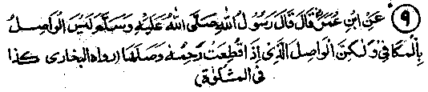
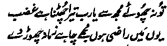

Chapter Three · Section (d): Ahadith concerning maintenance of kinship
8. Doing good for good does not strengthen kinship; one should strengthen it with those who sever it

Hadith 9
Rasulullah Sallallaho alaihe wasallam is reported to have said:."He who gives equal treatment in response does not really strengthen family bonds; but he is the one who through kind behaviour strengthens his ties of kinship with those who sever relations with him?
Note: Obviously, if you believe that you should treat your relatives just as they have treated you, you have done little for strengthening family bonds. For, this principle applies even to strangers: you are morally bound to do good to a person who has done a good turn to you. But, if you do good to a kinsman who does not' show much concern for you, remains aloof from you or even severs relations with you, your kind behaviour towards him would spring from a regard for the sanctity of family bonds. It is, therefore, desirable that you should never think of how a kinsman treats you but think of what you. owe him and continue to fulfil your obligations to him, lest you should be called to account on the Day of Judgment for negligence in observing your duty to him. Never for a moment entertain a thought of what he owes you on account of your kinship with him; you should rather feel happy if you are not receiving what is due from him. For, on the Day of Judgement your reward for foregoing your rights will be far greater than the material benefits you would have gained if he had fulfilled them.
Once a Sahabi Radhiallaho anho said to Rasulullah Sallallaho alaihe wasallam, "O Rasulullah, I have some relatives; I try to strengthen bonds of kinship with them but they ignore me; I treat them with kindness but they treat me badly, I exercise forbearance in my behaviour towards them but they are rude to me”. Rasulullah Sallallaho alaihe wasallam said, "If you are treating them as you say, you are throwing dust in their faces (they will be humiliated) and Allah Ta'ala will continue to support you against them as long as you remain steadfast in your behaviour." (Mishkaat). And, what harm can come to a person who is continuously supported by Allah Ta'ala in all his affairs! How can anybody who severs relations with him deprive him of any benefit? An Urdu poet says:

"I would not have Thee forsaking me, O Lord; O what a calamity (it would) be to be forsaken by you! If Thou art mine, I wo’nt mind being forsaken by the entire world".
There is no denying the fact that, if Allah Ta'ala supports a person, he does not need help from anyone else. For, all the world will work for his good and, even if all people were to unite against him, they would not be able to do him any harm. Another Hadith reports Rasulullah Sallallaho alaihe wasallam as saying, "Allah My Lord has commanded me to observe nine things: (1) To fear Allah openly and in private (i.e.fear Him from my heart and in my outward behaviour; or fear Him in my lonely hours and while sitting in company with people); (2) to speak justly, both when I am pleased and when angry (when pleased, a person hides the faults and extols the virtues and when angry he frames false accusations; I must speak justly under all conditions); (3) to adopt moderation both in poverty and in prosperity (i.e. not to be miserly in poverty, nor extravagant in prosperity; or, it may mean ‘not to grumble or complain when poor, nor take pride when rich); (4) to strengthen ties of kinship with him who has severed relations with me; (5) to show favour to him who has denied me his favours; (6) to forgive him who has wronged me; (7) that my silence should be devoted to meditation (on the signs of Allah Ta'ala or the circumstances of the Akhirah, etc.);(8) that my speech should be devoted to Glorifying Him or explaining His commandments to people; (9) that my looking at things should be for taking a lesson; (10) that I should enjoin what is good".
The Hadith mentions nine commands but seems to give ten. It may be that the tenth command is meant to sum up the details given in the first nine. Or, the commands given at serial no. 7 and 8 may be taken as one command , as in case of the first command (which enjoins fear of Allah, both in public and in private) two commands have been combined into one and, again in case of the second command (speaking justly both when pleased and when angry), two commands have been combined into one. Hakim bin Hazaam Radhi-allaho anho says that someone asked Rasulullah Sallallaho alaihe wasallam as to what kind of Sadaqah was the best, to which he replied, "Behaving kindly towards a relative who harbours enmity towards you". (Targhib). A Hadith narrates that Rasulullah Sallallaho alaihe wasallam said, "Anyone who wants to have high grades and lofty apartments awarded to him on the Day of Judgment should forgive a person who wrongs him and show kindness to him who denies him his favours and strengthen ties of kinship with him who has broken it off with him. (Durre Manthur). According to another Hadith, when this Ayat was revealed:
Keep to forgiveness (O Muhammad and enjoin kindness, and turn away from the rudely ignorant. (al-A'raf: 199)
Rasulullah Sallallaho alaihe wasallam asked Jibra’il Alaihis-salam to explain it to him. Jibra’il Alaihissalam said, "I shall tell you about it after asking the One Who knows’. So Jibra’il Alaihissalam went away and came back and told Rasulullah Sallallaho alaihe wasallam that Allah Ta'ala was commanding him (in this Ayat) to forgive those who wrong him, to grant favours to those who deny him their favours and to strengthen ties of kinship with those who sever relationship with him".
Another version of the Hadith adds, "After this revelation Rasulullah Sallallaho alaihe wasallam addressed the people thus: Shall I guide you to the excellent qualities of character for this life and for the Akhirah? " The Sahabah said, "Certainly!” and he continued, "They are, to forgive him who has wronged you, to give a favour to him who has denied you of his favours, to reunite ties of relationship with him who has broken it off with you". Ali Radhiallaho anho says that once Rasulullah Sallallaho alaihe wasallam said, "Shall I guide you to the excellent qualities of character possessed by the noble people of the earlier and the later times?" I said, ‘Certainly’ and he said, ‘They are: to favour him who has deprived you Of his favours; to forgive him who has wronged you and to rejoin ties of kinship with him who has severed relations with you. Uqbah Radhiallaho anho says that Rasulullah Sallallaho alaihe wasallam asked, ‘Shall I guide you to the excellent qualities of character for this life and the Hereafter? And then mentioned the aforesaid qualities. A number of Sahabah Radhiallaho anhum have related Ahadith to the same effect. Abu Hurairah Radhiallaho anho reports Rasulullah Sallallaho alaihe wasallam as saying, "Nobody can attain perfect sincerity in faith (Imaan) until he observes the following: Joins ties of kinship with those who have severed it with him, forgives those who wrong him, pardons those who abuse him and does good to those who ill-treat him. (Durre Manthur)